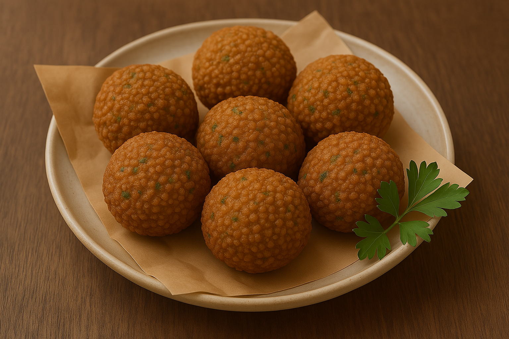

flafel

description:
Falafel is more than just a dish—it's an experience, a culinary journey through the vibrant streets and
traditions of the Middle East. This beloved deep-fried patty, typically made from ground chickpeas, fava beans,
or a blend of both, creates a symphony of textures and flavors that capture the essence of home-cooked comfort
and exotic spice. Its crisp exterior gives way to a tender, aromatic interior that’s enriched by a mélange of
herbs and spices, making every bite an invitation to partake in a storied tradition.
ingredients :
- chickpeas
- herbs and vegetables
- spices
- binding agents
- optional flour
steps :
- Begin with high-quality dried chickpeas, ensuring they are soaked in water overnight. This step softens
them, making them easier to blend and digest. The soaking process also enhances the chickpeas' flavor while
reducing cooking time
-
Drain the chickpeas and place them in a food processor. Add chopped onions, garlic, fresh herbs (like
parsley and cilantro), and a generous pinch of salt. Incorporate spices such as cumin and coriander. Pulse
until the mixture is finely minced but not turned into a paste; you’re aiming for a coarse, slightly grainy
texture that will crisp up nicely when fried.
-
Optionally, add a small amount of chickpea flour or regular flour along with a light dusting of baking
powder. These help to bind the mixture, ensuring the fall-off of flavors is locked into perfect little
patties or balls. Once the mixture is well combined, allow it to rest for about 30 minutes. This resting
time lets the flavors meld and the mixture firm up slightly, making it easier to shape
-
Heat oil (traditionally a neutral oil with a high smoke point) in a deep-fryer or a heavy-bottomed pan to
around 350°F (175°C). Gently shape the falafel mixture into small balls or patties using your hands or a
falafel scoop, and carefully lower them into the hot oil. Fry until they turn a deep and inviting golden
brown on all sides. Depending on their size, this usually takes about 3-5 minutes per batch. Once fried,
remove them with a slotted spoon and let them drain on paper towels.
-
Enjoy your fresh falafel while it’s still warm. Traditionally, falafel is served with a drizzle of tahini
sauce, nestled inside pita bread, accompanied by fresh salads, pickles, and sometimes a squeeze of lemon to
enhance its natural flavors
home page